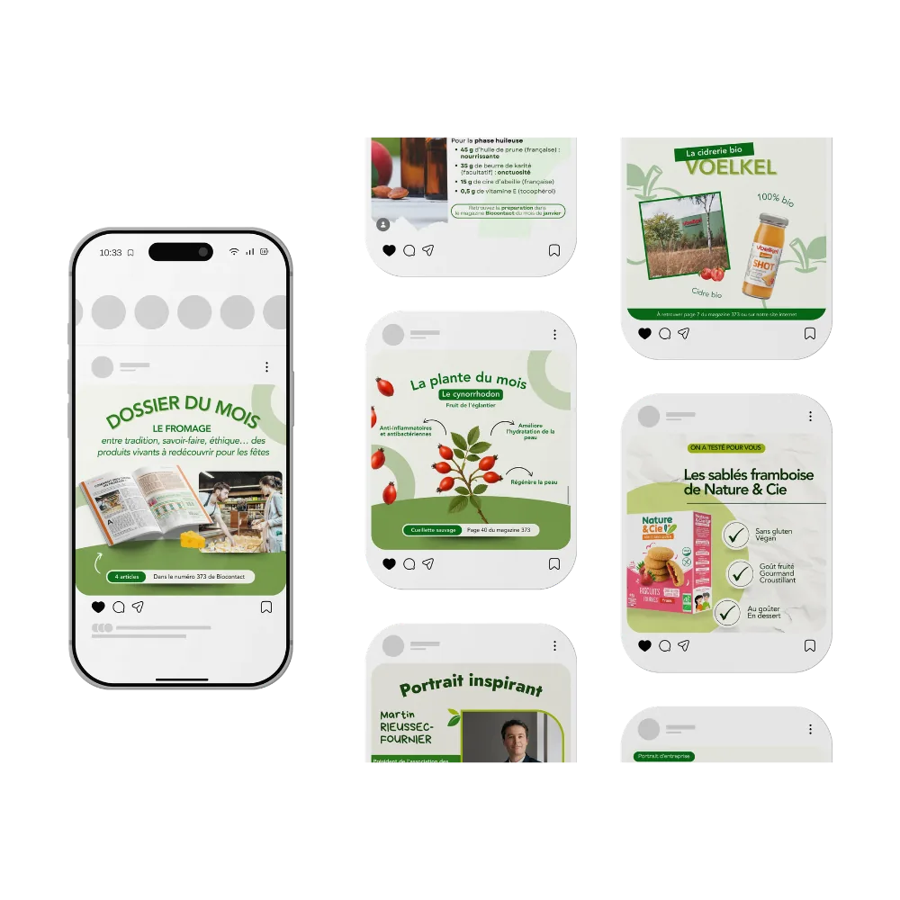
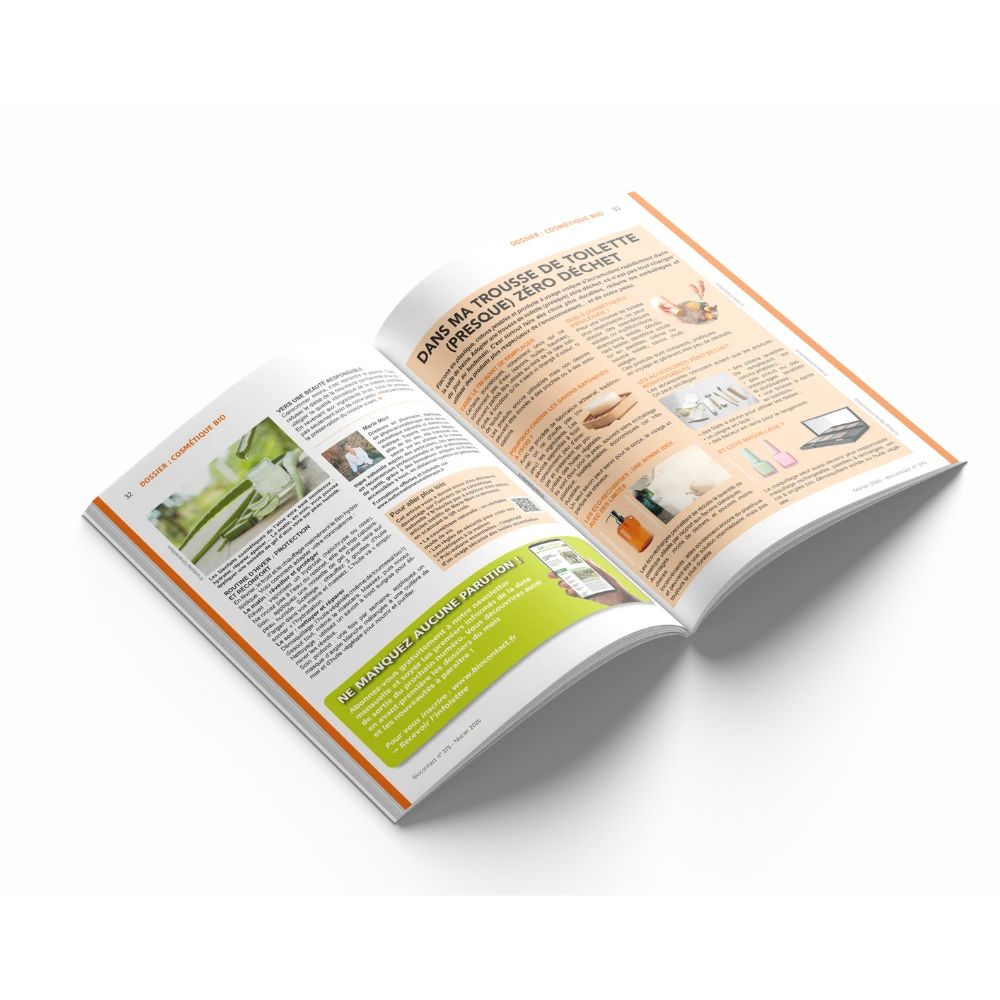
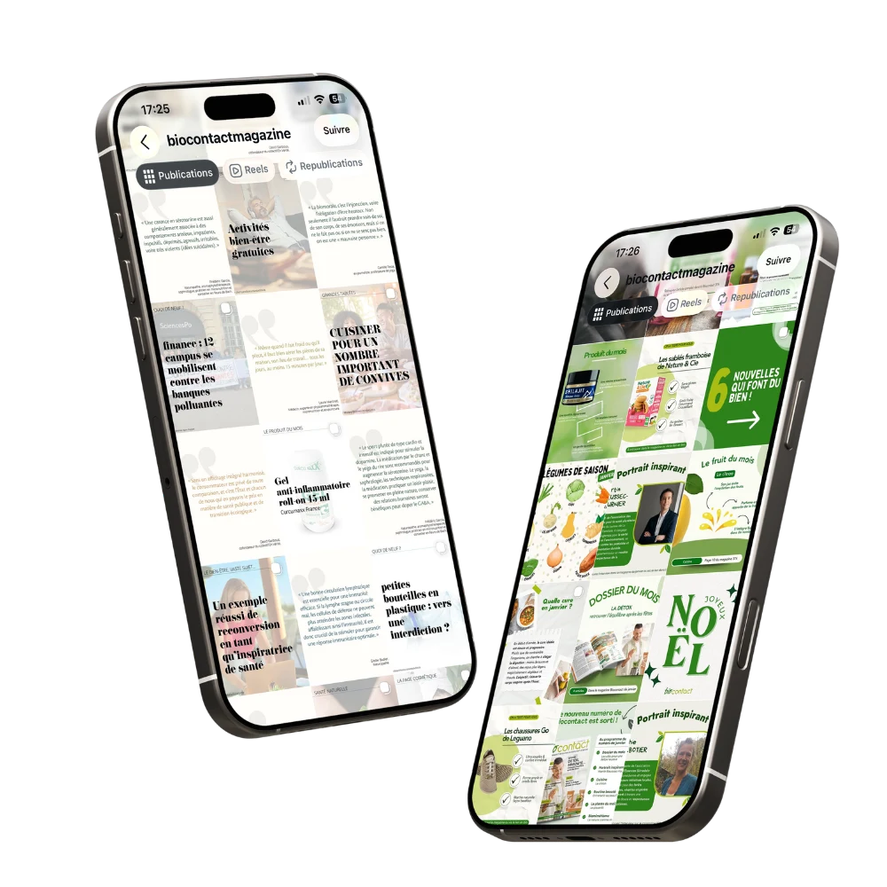

Une identité dispersée
Les publications ne formaient pas encore un univers digital immédiatement reconnaissable.
L’audit du feed a révélé une succession de visuels traités séparément, sans codes assez stables pour signer la marque au premier regard.Relier les contenus du magazine, les réseaux sociaux et la newsletter grâce à une identité cohérente et des modèles faciles à décliner.

Biocontact · Nouvelle ligne visuelle
Après son rachat par les Éditions Messignac, Biocontact souhaitait renforcer sa présence digitale tout en conservant l’identité de son magazine.
Ma mission : créer des repères visuels pour les différentes rubriques et une bibliothèque de modèles réutilisables d’un numéro à l’autre.
Comment faire reconnaître Biocontact en quelques secondes, tout en donnant envie de passer du post au magazine ?
Avant de créer, j’ai identifié quatre points de friction. Ils expliquent pourquoi une simple série de nouveaux visuels n’aurait pas suffi.
Les publications ne formaient pas encore un univers digital immédiatement reconnaissable.
L’audit du feed a révélé une succession de visuels traités séparément, sans codes assez stables pour signer la marque au premier regard.Le lecteur distinguait difficilement les rubriques et les rendez-vous récurrents.
Créer des signatures de rubrique permet de transformer des sujets très variés en rendez-vous identifiables et plus faciles à mémoriser.Chaque publication demandait de repartir presque de zéro au lieu d’adapter un cadre commun.
Une bibliothèque de templates réduit les choix répétitifs et laisse davantage de temps à la sélection, à l’écriture et à la qualité du contenu.La valeur du magazine et la profondeur de ses contenus restaient peu visibles dans le feed.
Les nouveaux formats rendent visibles le dossier, la page ou le numéro d’origine afin que chaque publication prolonge réellement la lecture.Un même parcours de création, du choix du sujet à la publication.
Identifier les sujets et messages les plus utiles du numéro.
Choisir la promesse la plus claire pour le lecteur.
Rattacher le sujet à une famille visuelle reconnaissable.
Adapter la composition sans recréer tout le visuel.
Orienter vers le magazine, l’article ou la newsletter.
Le système ne repose pas sur un modèle figé. Il définit des règles partagées, puis donne à chaque rubrique sa propre manière de raconter le contenu.
Une palette végétale cohérente avec le bio, utilisée avec davantage de contraste.
Une hiérarchie forte : promesse, information essentielle puis appel à poursuivre.
Des formes organiques et des compositions souples pour créer du rythme.
Des signatures de rubrique stables pour construire des habitudes de lecture.

Des reprises du magazine avec peu de repères entre les rubriques.
Des rubriques distinctes, des accroches claires et un lien vers la lecture complète.
Chaque famille de contenu possède sa propre composition tout en restant clairement rattachée à l’identité globale. Cliquez sur un visuel pour l’observer en grand.
6 rubriques affichées
Décrypter simplement un actif et renvoyer vers la page correspondante du magazine.
Mettre en avant le sujet phare de chaque numéro et donner envie de poursuivre la lecture.
Partager des idées simples et gourmandes tout en conservant un format très pratique.
Rendre les recettes et les conseils de formulation accessibles dans un visuel pédagogique.
Donner un visage aux engagements défendus par le magazine et valoriser les parcours.
Synthétiser les points clés d’un produit pour transformer le test en conseil utile.
Chaque rubrique conserve sa personnalité, tandis que la palette, les formes et la hiérarchie créent une signature Biocontact immédiatement identifiable.
Une identité cohérente et reconnaissable au fil des publications.
Des rubriques claires pour repérer rapidement l’essentiel.
Des templates réutilisables pour simplifier la création des contenus.
Évolutions avant / après du projet. Ces indicateurs ne permettent pas, seuls, d’isoler l’effet de la refonte.
Progression de la visibilité des publications.
Hausse des interactions avec les contenus.
Créations déclinées dans le nouveau système éditorial.
Réduction du temps nécessaire par publication.
Estimations : base 100 avant la refonte, échelle commune de 0 à 150.
Portée : indice 100 avant, 136 après, soit +36 %.
Les templates accélèrent la déclinaison sans sacrifier la cohérence ni la personnalité de chaque rubrique.
| Indicateur | Avant | Après | Évolution |
|---|---|---|---|
| Portée moyenne | 100 | 136 | +36 % |
| Engagement | 100 | 128 | +28 % |
| Trafic | 100 | 121 | +21 % |
| Temps de création | 100 | 60 | −40 % |
Quatre étapes pour transformer les besoins éditoriaux en modèles prêts à utiliser.
Analyser le magazine, les contenus existants et les habitudes de publication.
Regrouper les sujets en rubriques et définir une hiérarchie éditoriale stable.
Concevoir les compositions, les déclinaisons et les règles visuelles communes.
Organiser une bibliothèque simple à adapter aux prochains numéros.
{kind=link}
{kind=link}
{kind=link}
{kind=link}
{kind=link}
{kind=link}